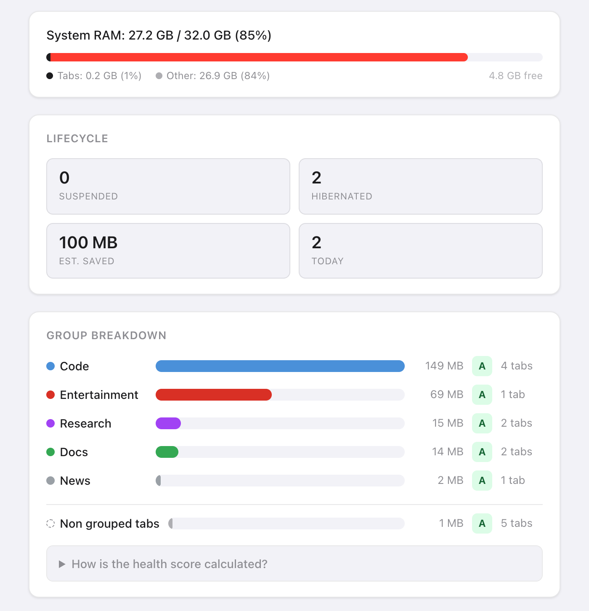
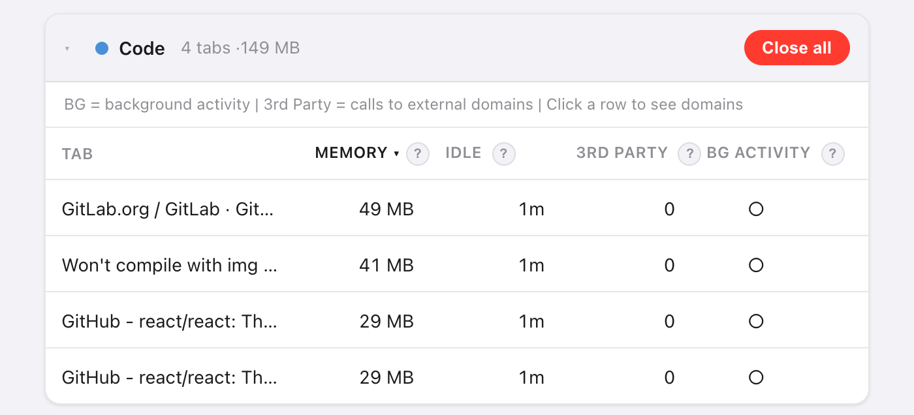
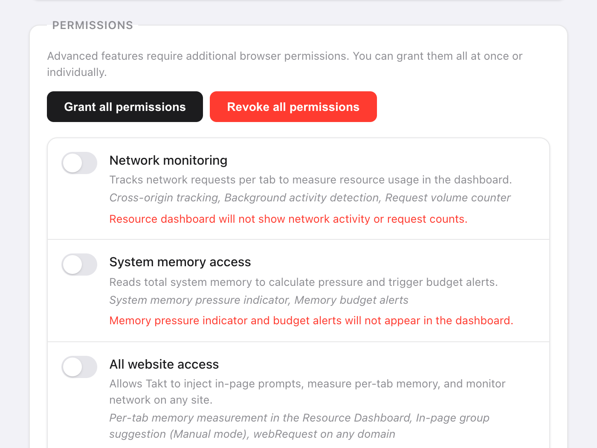

Short answer: open Takt's Options → Dashboard. Groups are ranked by estimated memory, and each group's tabs are sorted largest first.
- Per-tab memory estimate, idle time, third-party domains and background activity.
- A–F health score per tab group, a system memory bar, and memory budgets that unload tabs for you.
- Premium ($3/month or $30/year). Measured in your browser, by nothing outside it.
Why is it hard to tell which tab is using memory?
Chrome shows a memory figure in a tab's hover card, one tab at a time. With 30 tabs open, that's 30 hovers, and no totals.
You usually don't care about one tab anyway. You care whether "Research" or "Entertainment" is the group to close. So Takt adds memory up by tab group.

How does Takt estimate a tab's memory?
Takt runs a short script inside each tab and adds four parts:
| Part | How it's measured |
|---|---|
| JavaScript heap | Heap in use, as Chrome reports it to the page |
| DOM tree | Number of elements × about 1.5 KB |
| Loaded resources | Decoded size of every file the page loaded |
| Canvas buffers | Width × height × 4 bytes per canvas |
Treat the result as a ranking, not an invoice. It leaves out the browser's own overhead for each tab, so Chrome's figure for the same tab can differ.
Some tabs can't be measured. Suspended tabs have nothing running. Chrome pages (chrome://), extension pages and the Chrome Web Store don't allow scripts, so they appear under Unmonitored tabs. If a tab doesn't answer within 3 seconds, Takt shows its last known value.

What do the A–F health scores mean?
Each group starts at 100 points and loses points on four factors:
| Factor | Condition | Penalty |
|---|---|---|
| Memory (group total) | Over 500 MB / over 200 MB | −30 / −15 |
| Average idle time | Over 60 min / over 30 min | −20 / −10 |
| Tabs with background activity | More than 3 / at least 1 | −20 / −10 |
| Third-party domains | Over 50 / over 20 | −15 / −5 |
Grades: A is 90 or more, B 75 to 89, C 60 to 74, D 40 to 59, F below 40. A group using 300 MB with tabs idle 45 minutes on average scores 75: a B.
"Background activity" means the tab completed a network request in the last 60 seconds. "Third-party" means any domain other than the tab's own site and its subdomains. Common CDNs are counted separately, so they don't inflate the score.
What do I do once I've found the heavy tabs?
- Discard recommendations. Takt lists 5 tabs to unload, ranked by memory and idle time, with extra weight for background activity. It skips the active tab, pinned tabs and a tab that is alone in its group. Click Suspend to unload one.
- Close all on a group card closes that group.
- Hibernate a tab you want back later. See how hibernation works.
Can I cap how much memory a tab group uses?
Yes. In Settings → Memory Budgets, enter a group name and a limit in MB. Takt checks budgets every 15 seconds.
When a group goes over, you get a notification: the group, its usage, its budget, and "Suspending tabs in 10s — click to cancel". Ignore it, and Takt unloads that group's largest tabs until it's back under budget. It never touches the active tab, pinned tabs or tabs playing audio. Click the notification to cancel.
Budgets work from the same estimates, so they need All website access too.
Which permissions does the dashboard need?
None at install. You grant each one in Settings → Permissions and can revoke it there at any time.
| Permission | What it adds | Without it |
|---|---|---|
| All website access | Per-tab memory estimates | Memory shows "—" |
| Network monitoring | Third-party domains and background activity (needs All website access too) | No network columns |
| System memory access | The system RAM bar | "System memory unavailable" |
Network monitoring only sees requests made after you grant it. Reload open tabs to start counting. Takt reads request addresses and timing, not page content.

What the dashboard can't tell you
It estimates page memory. It doesn't read Chrome's process list, so it can't see GPU memory, extensions or the browser itself. If the system bar puts most of your RAM under "Other", that memory is going to other apps or to Chrome itself, not to what your pages hold.
Find the group that's eating your RAM. Then put it to sleep.
Add Takt to ChromeFAQ
How does Takt estimate a tab's memory?
It adds the JavaScript heap in use, the element count × about 1.5 KB, the decoded size of loaded resources, and canvas buffers at width × height × 4 bytes. Use it to rank tabs.
Why does the Memory column show a dash?
All website access isn't granted, the tab is suspended, or it's a page extensions can't run scripts on, such as chrome:// pages.
Is the Resource Dashboard free?
No. The dashboard and memory budgets are Premium, at $3/month or $30/year.
Does Takt send my tab data anywhere to measure it?
No. Every measurement runs inside your browser. See how Takt keeps data local.